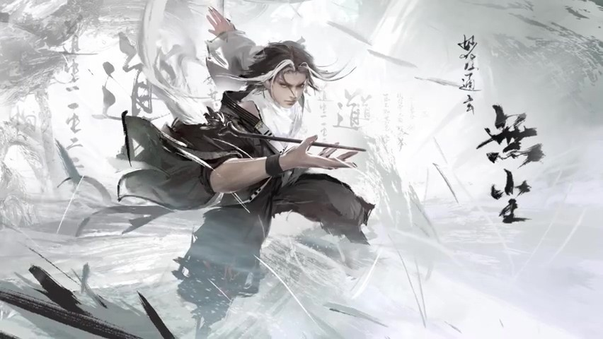
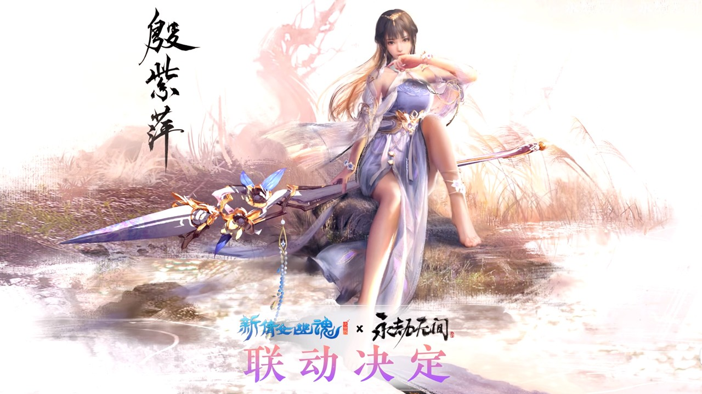

为啥现在的开放世界越玩越累？这款网易新游
兄弟们，先问个扎心的问题：你有没有觉得，现在的开放世界游戏，玩起来比上班还累？地图上密密麻麻的“问号”，清不完的据点和宝箱，抽卡资源像吊在驴面前的胡萝卜，永远看得见摸不着。当“开放世界”从“自由”的代名词变成“坐牢”的同义词，这个曾经的游戏圈“王冠明珠”，好像突然不香了。就在这个号称“史上最冷”的7月暑期档，偏偏有款网易的新游《遗忘之海》头铁定档，它号称要用一套“局内外双循环”的机制，给累坏了的玩家们好好“按个摩”。
按理说，暑期档应该是大作扎堆、神仙打架的节点。但2026年的7月愣是拐向了“外热内冷”的怪局面——大厂自研旗舰定档的，掰着指头数也就剩《遗忘之海》这根独苗。说白了，不是新游戏不努力，是老套路不给力。所有开放世界都在换皮搞抽卡，玩家消费完场景就剩每日上线清日常，这谁顶得住？
那病灶到底在哪？没完没了的抽卡驱动探索，才是万恶之源。以前玩家在大世界跑断腿，是为了看风景、触发奇遇。现在呢？是为了凑那发十连抽。头部产品把这个商业模式跑通后，后来者全在照抄，抄得地图一个比一个大，玩起来却一个比一个像坐牢。审美疲劳还是小事，关键是长线动力崩了——开宝箱不是为了惊喜，而是为了那点可怜的抽卡货币。

既然病灶在“动机”，那就换个活法。《遗忘之海》敢在这个节骨眼“头铁”冲进来，手里攥着的底牌，就是这个“多周目局内外双循环”机制。名字听着复杂，说人话就是：你在大世界打副本搞肉鸽寻宝，能随机构筑流派变强；这个变强的过程能带出副本反哺局外养成；最关键的是，每周打通一次，直接白嫖限定SSR。别的游戏让你氪金抽卡，它想让你“肝”得有价值，甚至“肝”出惊喜。熟练玩家两三小时就能搞定一周的“遗忘之旅”，非酋三周保底一个SSR，欧皇每周都能免费捞一个。这获得感，确实是在给玩家省钱又省心。
但《遗忘之海》想做的还不止是让你“肝”得爽。它还在试着解一道GaaS化游戏的无解题——如何让持续运营的游戏拥有单机般的自由度和多结局？它用“赛季制+主城实时演算”来破局。你在主城跟NPC交好还是交恶，甚至大开杀戒，都会真实改变城里的生态。杀多了可能触发“荒凉结局”，主城破败下雨，送你一把伞；屠城太狠甚至能解锁“宕机结局”，直接404无法充值，只能找客服回档。这种把选择权交还给玩家的做法，虽然讨巧，但确实挠到了开放世界自由度的痒处。

当然，公测版本也没闲着，新海域、新岛屿、新BOSS“猩红女爵”都在路上。而且这游戏很清醒，知道在红海里光靠玩法还不够。所以它一出手就是跟《海绵宝宝》联动、请Alan Walker和张韶涵做主题曲、跟非遗云锦搞国潮合作。玩法创新是里子，文化联动就是面子。它不只想抢玩家，更想把自己变成年轻人茶余饭后的谈资。
或许《遗忘之海》未必能成为一片无人竞争的蓝海，但它至少证明了一件事：在“内卷”和“摆烂”之间，还有第三条路——用机制创新去重构玩家的驱动力，用文化联动去拓宽产品的边界。当别的游戏还在让你清完日常赶紧下线时，它想让你坐下来，好好“玩”一局。你觉得这种“不累”的开放世界能成吗？你会为了能“肝”出SSR去试试水吗？欢迎在评论区聊聊你的看法！
关于我们
📱 公众号名称：三天游戏
✍️ 作者：曾三天
扫码关注公众号，获取每日最新资讯

商务合作与版权
商务合作 / 内容投稿 / 品牌推广
请关注公众号「三天游戏」后台留言联系
版权声明：本文由作者整理，转载需注明出处。